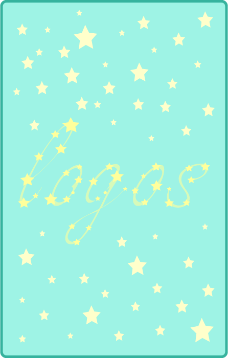

About

AstroLogos is a project encompassing several areas of art that have to do with the metaphysical. This website deals with tarot readings and meanings of tarot cards. It features an original tarot deck with meanings and descriptions, designed by the creator of this website.
About the creator: I go by May Mois, they/them pronouns. I am a college student interested in investigation of life from different approaches.